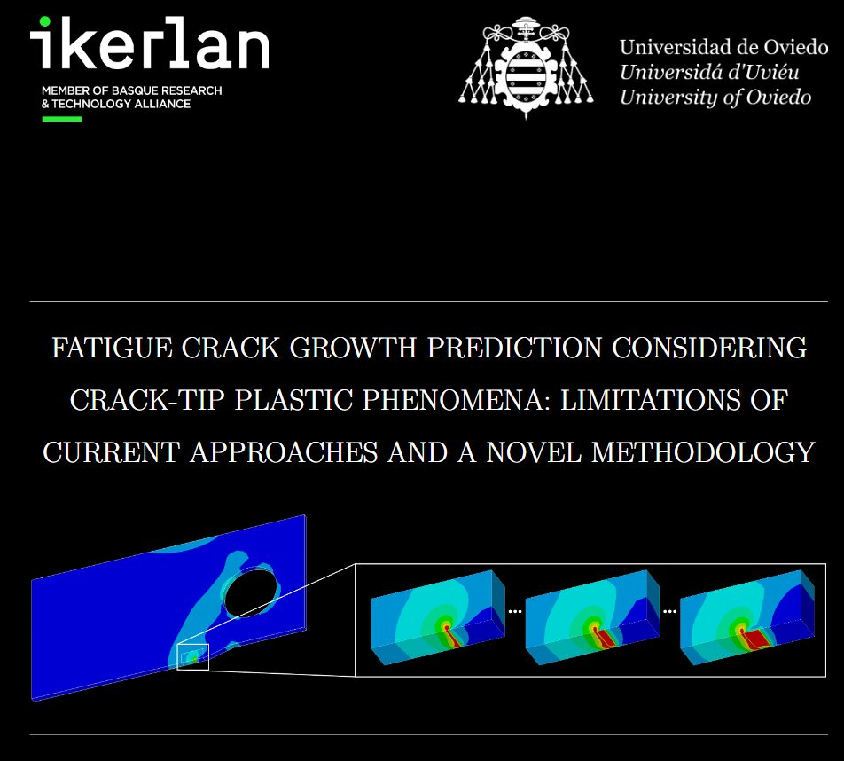

Noticias
Actualidad de la Cátedra Ikerlan: premios, jornadas, convocatorias y defensas de tesis.

La Cátedra Ikerlan de Investigación y Desarrollo inaugura su sede en el Campus de Gijón de la Universidad de Oviedo
En el acto se presentó la Convocatoria de Proyectos I+D+i 2025 financiados por la Cátedra Ikerlan, así como las posibilidades que ofrece Ikerlan a los estudiantes de la EPI de Gijón.
Leer noticia
Jornada Cátedra Ikerlan 2023
El pasado 20 de septiembre de 2023 compartimos con estudiantes y profesores la Jornada Cátedra Ikerlan 2023 en la EPI.
Leer noticia
Mario Martín y Malena Potesta reciben los premios de la Cátedra Ikerlan
Premios a mejor expediente del máster en Ingeniería Mecatrónica y mejor TFG 2021/2022 en Desarrollo y Transferencia Tecnológica.
Leer noticia
Renovamos por 4 años la Cátedra Ikerlan
La Escuela Politécnica de Ingeniería acogió el 20 de septiembre la Jornada Ikerlan, en el contexto de la cátedra que acaba de ser renovada por cuatro años.
Leer noticia
Convocatoria Premios Cátedra Ikerlan 2021-2022
Premio al mejor expediente en Ingeniería Mecatrónica y Premio TFG sobre innovación y transferencia tecnológica del curso 2021-2022.
Leer noticia
I Concurso Ideas Cátedra Ikerlan
En la visita a las instalaciones de Ikerlan, el 26 de octubre de 2022, se celebró la final del I Concurso Ideas Cátedra Ikerlan.
Leer noticia
Alejandro Fernández y Mario Martín premiados por la Cátedra Ikerlan
Premios al mejor TFG en Ingeniería Mecánica y Tecnologías Industriales y al mejor expediente de primer año del máster en Ingeniería Mecatrónica.
Leer noticia
Fruela de la Roza y Pelayo Fernández ganadores de los Premios Cátedra Ikerlan 2020
Premio al mejor TFG sobre innovación y transferencia tecnológica y al mejor expediente del primer año del máster en Ingeniería Mecatrónica.
Leer noticia
22 de diciembre: defensa de tesis de Mikel Escalero Igartúa
«Predicción de crecimiento de grietas en fatiga considerando fenómenos plásticos de punta de grieta: limitaciones de enfoques actuales y una metodología novedosa».
Leer noticiaEl 22 de diciembre se fallarán los Premios de la Cátedra Ikerlan-Uniovi
El acto tendrá lugar en la Sala de Juntas del Aulario Sur del Campus de Gijón a las 10.50 horas.
Leer noticia